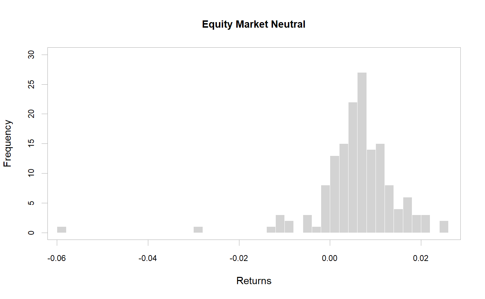
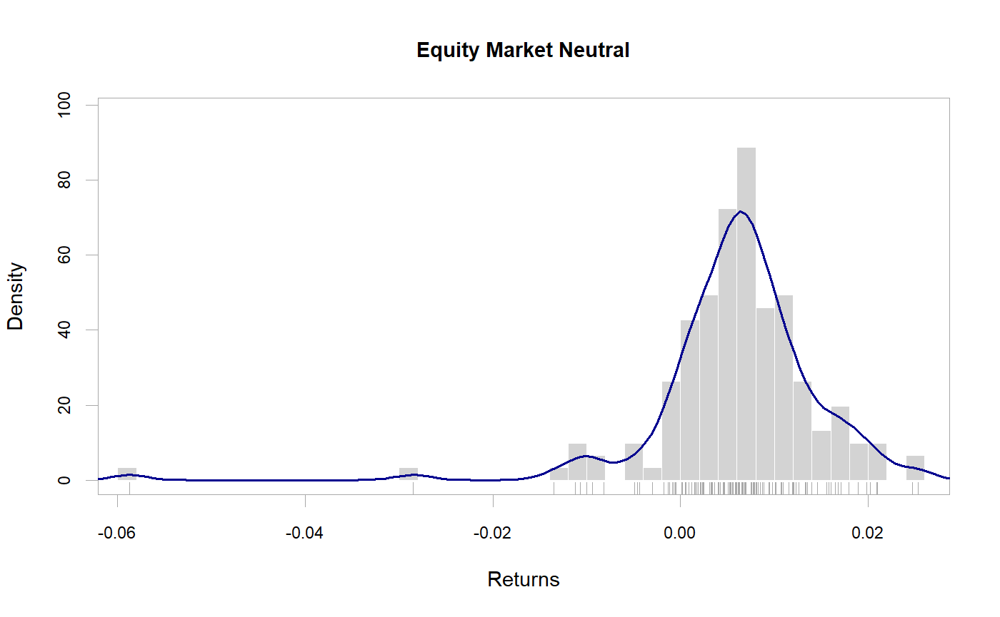
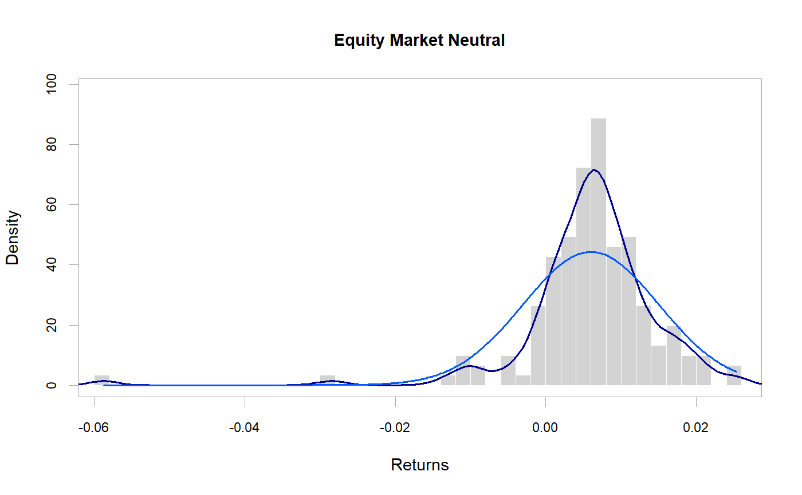
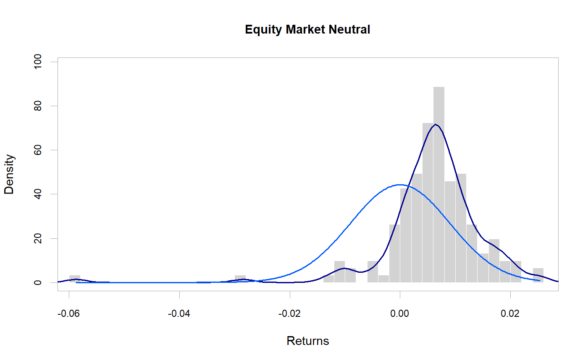
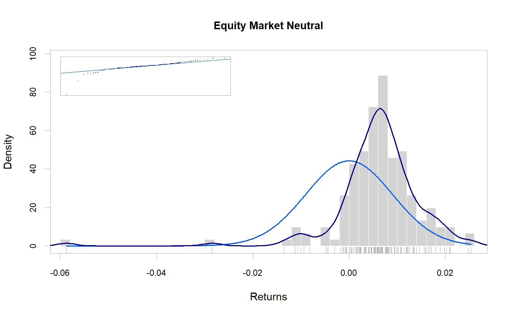
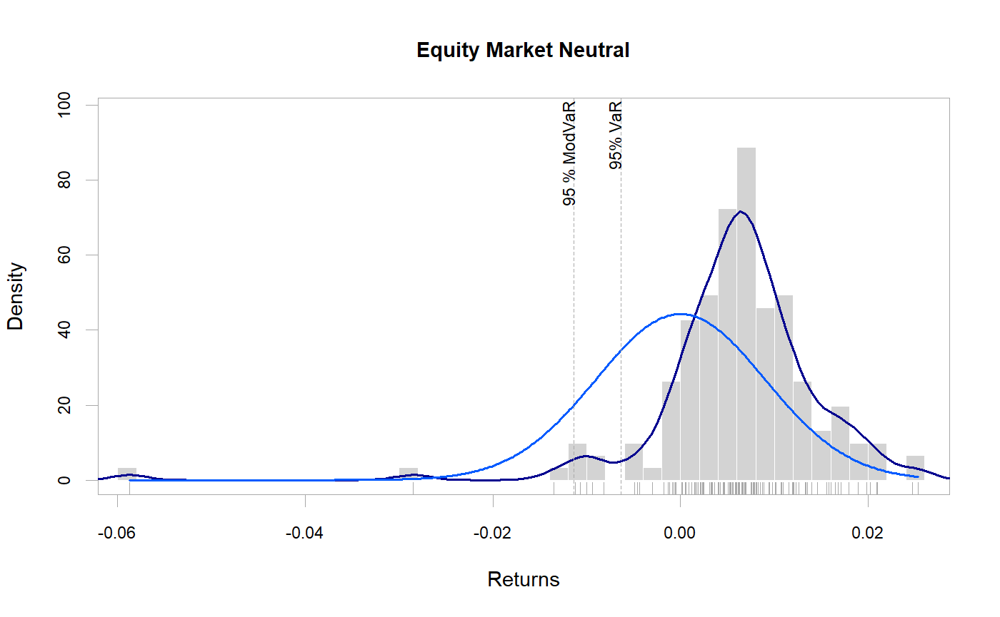

Create a histogram of returns, with optional curve fits for density and
normal. This is a wrapper function for hist, see
the help for that function for additional arguments you may wish to pass in.
chart.Histogram(R, breaks = "FD", main = NULL, xlab = "Returns", ylab = "Frequency", methods = c("none", "add.density", "add.normal", "add.centered", "add.cauchy", "add.sst", "add.rug", "add.risk", "add.qqplot"), show.outliers = TRUE, colorset = c("lightgray", "#00008F", "#005AFF", "#23FFDC", "#ECFF13", "#FF4A00", "#800000"), border.col = "white", lwd = 2, xlim = NULL, ylim = NULL, element.color = "darkgray", note.lines = NULL, note.labels = NULL, note.cex = 0.7, note.color = "darkgray", probability = FALSE, p = 0.95, cex.axis = 0.8, cex.legend = 0.8, cex.lab = 1, cex.main = 1, xaxis = TRUE, yaxis = TRUE, ...)
| R | an xts, vector, matrix, data frame, timeSeries or zoo object of asset returns |
|---|---|
| breaks | one of:
For the last three the number is a suggestion only.
see |
| main | set the chart title, same as in |
| xlab | set the x-axis label, same as in |
| ylab | set the y-axis label, same as in |
| methods | what to graph, one or more of:
|
| show.outliers | logical; if TRUE (the default), the histogram will show all of the data points. If FALSE, it will show only the first through the fourth quartile and will exclude outliers. |
| colorset | color palette to use, set by default to rational choices |
| border.col | color to use for the border |
| lwd | set the line width, same as in |
| xlim | set the x-axis limit, same as in |
| ylim | set the y-axis limits, same as in |
| element.color | provides the color for drawing chart elements, such as the box lines, axis lines, etc. Default is "darkgray" |
| note.lines | draws a vertical line through the value given. |
| note.labels | adds a text label to vertical lines specified for note.lines. |
| note.cex | The magnification to be used for note line labels relative to the current setting of 'cex'. |
| note.color | specifies the color(s) of the vertical lines drawn. |
| probability | logical; if TRUE, the histogram graphic is a
representation of frequencies, the counts component of the result; if FALSE,
probability densities, component density, are plotted (so that the histogram
has a total area of one). Defaults to TRUE if and only if breaks are
equidistant (and probability is not specified). see
|
| p | confidence level for calculation, default p=.99 |
| cex.axis | The magnification to be used for axis annotation relative to
the current setting of 'cex', same as in |
| cex.legend | The magnification to be used for sizing the legend relative to the current setting of 'cex'. |
| cex.lab | The magnification to be used for x- and y-axis labels relative to the current setting of 'cex'. |
| cex.main | The magnification to be used for the main title relative to the current setting of 'cex'. |
| xaxis | if true, draws the x axis |
| yaxis | if true, draws the y axis |
| … | any other passthru parameters to |
The default for breaks is "FD". Other names for which
algorithms are supplied are "Sturges" (see
nclass.Sturges), "Scott", and "FD" /
"Freedman-Diaconis" (with corresponding functions
nclass.scott and nclass.FD). Case is ignored
and partial matching is used. Alternatively, a function can be supplied
which will compute the intended number of breaks as a function of R.
Code inspired by a chart on: http://zoonek2.free.fr/UNIX/48_R/03.html
data(edhec) chart.Histogram(edhec[,'Equity Market Neutral',drop=FALSE])# version with more breaks and the # standard close fit density distribution chart.Histogram(edhec[,'Equity Market Neutral',drop=FALSE], breaks=40, methods = c("add.density", "add.rug") )chart.Histogram(edhec[,'Equity Market Neutral',drop=FALSE], methods = c( "add.density", "add.normal") )# version with just the histogram and # normal distribution centered on 0 chart.Histogram(edhec[,'Equity Market Neutral',drop=FALSE], methods = c( "add.density", "add.centered") )# add a rug to the previous plot # for more granularity on precisely where the distribution fell chart.Histogram(edhec[,'Equity Market Neutral',drop=FALSE], methods = c( "add.centered", "add.density", "add.rug") )# now show a qqplot to give us another view # on how normal the data are chart.Histogram(edhec[,'Equity Market Neutral',drop=FALSE], methods = c("add.centered","add.density","add.rug","add.qqplot"))# add risk measure(s) to show where those are # in relation to observed returns chart.Histogram(edhec[,'Equity Market Neutral',drop=FALSE], methods = c("add.density","add.centered","add.rug","add.risk"))